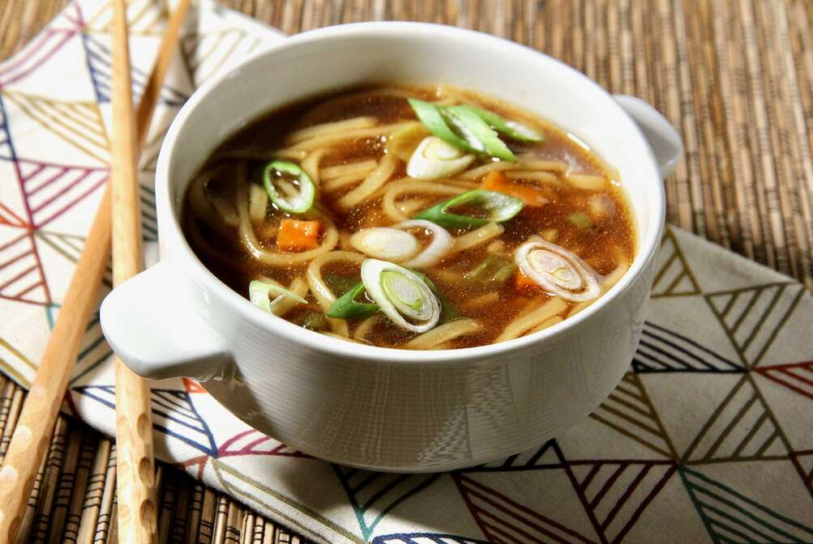

Ramen

Description
Ramen is a Japanese noodle soup,
with a combination of a rich flavoured broth,
one of a variety of types of noodle and a selection
of meats or vegetables, often topped with a boiled
egg. In Japan ramen is considered a fast food, with
many small restaurants and street vendors offering a
warming bowl of this delicious soup.
The dish of ramen is heavily regionalised, with
different variations served in different areas of
Japan, although all variations are based on the same
broth and noodle concept.
Ingredients
- 3 1/2 cups vegetable broth
- 1 (3.5 ounce) package ramen noodles with dried vegetables
- 2 teaspoons soy sauce
- 1/2 teaspoon chili oil
- 1/2 teaspoon minced fresh ginger root
- 1 teaspoon sesame oil
- 2 green onions, sliced
Steps
- In a medium saucepan combine broth and noodles.
- Cover and bring to a boil over high heat; stir to break up noodles.
- Reduce heat to medium and add soy sauce, chili oil and ginger.
- Simmer, uncovered, for 10 minutes. Stir in sesame oil and garnish with green onions.